Visualization Gallery
Zaoqu Liu
Department of Interventional Radiology, The First Affiliated Hospital of Zhengzhou Universityliuzaoqu@163.com
Aimin Xie
Original Authoraiminyy1993@gmail.com
2026-01-23
Source:vignettes/visualization.Rmd
visualization.RmdIntroduction
This vignette demonstrates various visualization techniques for scPAS analysis results. We’ll cover:
- UMAP/t-SNE plots for risk scores
- Cell type enrichment analysis
- Volcano plots
- Heatmaps
- Violin plots
- Spatial transcriptomics visualization
Setup and Simulated Data
library(scPAS)
library(Seurat)
library(Matrix)
library(ggplot2)
library(RColorBrewer)
library(dplyr)
# Set theme
theme_set(theme_minimal())Create Simulated scPAS Result
set.seed(42)
# Simulate single-cell data
n_genes <- 500
n_cells <- 800
# Create count matrix
counts <- matrix(
rpois(n_genes * n_cells, lambda = 5),
nrow = n_genes,
ncol = n_cells
)
rownames(counts) <- paste0("Gene", 1:n_genes)
colnames(counts) <- paste0("Cell", 1:n_cells)
# Create Seurat object
sc_obj <- CreateSeuratObject(counts = counts, project = "VisDemo")
# Add cell type labels with different proportions
cell_types <- c(
rep("T_cells", 200),
rep("B_cells", 150),
rep("Monocytes", 150),
rep("NK_cells", 100),
rep("Fibroblasts", 100),
rep("Endothelial", 100)
)
sc_obj$celltype <- cell_types
# Run preprocessing
sc_obj <- NormalizeData(sc_obj, verbose = FALSE)
sc_obj <- FindVariableFeatures(sc_obj, verbose = FALSE)
sc_obj <- ScaleData(sc_obj, verbose = FALSE)
sc_obj <- RunPCA(sc_obj, verbose = FALSE)
sc_obj <- RunUMAP(sc_obj, dims = 1:20, verbose = FALSE)
# Simulate scPAS results
# Make T_cells and NK_cells enriched for scPAS+
# Make B_cells and Fibroblasts enriched for scPAS-
set.seed(42)
risk_scores <- rep(NA, n_cells)
# T_cells and NK_cells: higher risk
risk_scores[cell_types %in% c("T_cells", "NK_cells")] <-
rnorm(sum(cell_types %in% c("T_cells", "NK_cells")), mean = 1.5, sd = 1.2)
# B_cells and Fibroblasts: lower risk
risk_scores[cell_types %in% c("B_cells", "Fibroblasts")] <-
rnorm(sum(cell_types %in% c("B_cells", "Fibroblasts")), mean = -1.5, sd = 1.2)
# Others: neutral
risk_scores[cell_types %in% c("Monocytes", "Endothelial")] <-
rnorm(sum(cell_types %in% c("Monocytes", "Endothelial")), mean = 0, sd = 0.8)
# Calculate p-values (simulated)
p_values <- 2 * pnorm(-abs(risk_scores))
fdr <- p.adjust(p_values, method = "BH")
# Classification
classification <- ifelse(
fdr >= 0.05, "0",
ifelse(risk_scores > 0, "scPAS+", "scPAS-")
)
# Add to metadata
sc_obj$scPAS_NRS <- risk_scores
sc_obj$scPAS_RS <- risk_scores * 0.01 # Raw scores
sc_obj$scPAS_Pvalue <- p_values
sc_obj$scPAS_FDR <- fdr
sc_obj$scPAS <- factor(classification, levels = c("scPAS-", "0", "scPAS+"))Basic UMAP Plots
Cell Type Overview
# Define colors
celltype_colors <- c(
"T_cells" = "#E41A1C",
"B_cells" = "#377EB8",
"Monocytes" = "#4DAF4A",
"NK_cells" = "#984EA3",
"Fibroblasts" = "#FF7F00",
"Endothelial" = "#FFFF33"
)
DimPlot(
sc_obj,
group.by = "celltype",
cols = celltype_colors,
label = TRUE,
label.size = 4,
pt.size = 1
) +
ggtitle("Cell Type Distribution") +
theme(
plot.title = element_text(hjust = 0.5, face = "bold", size = 14),
legend.position = "right"
)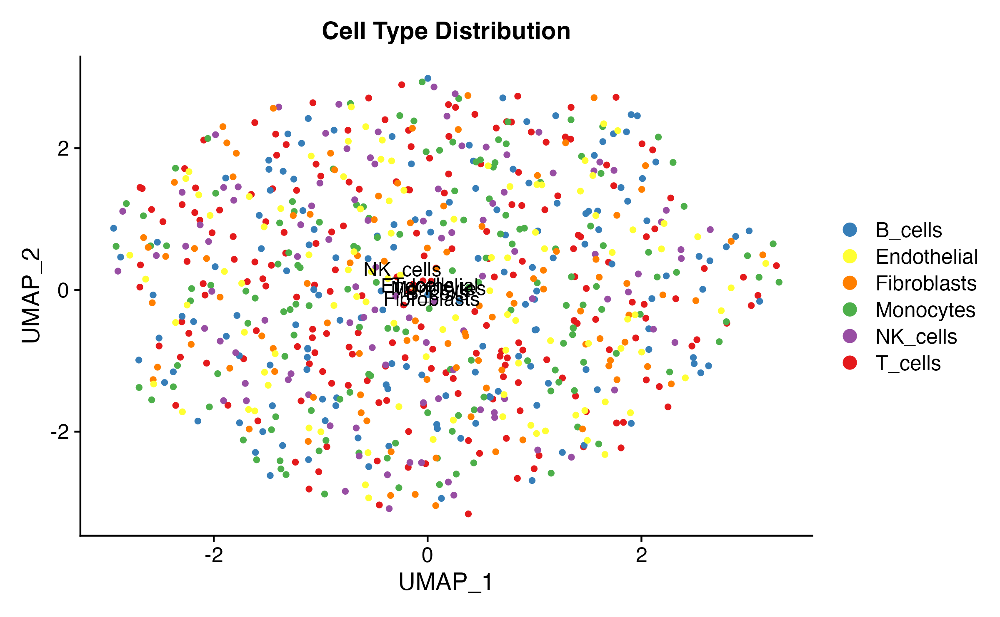
Risk Score Visualization
FeaturePlot(
sc_obj,
features = "scPAS_NRS",
pt.size = 1,
order = TRUE
) +
scale_color_gradient2(
low = "royalblue",
mid = "white",
high = "indianred",
midpoint = 0,
name = "NRS"
) +
ggtitle("Normalized Risk Score") +
theme(
plot.title = element_text(hjust = 0.5, face = "bold", size = 14)
)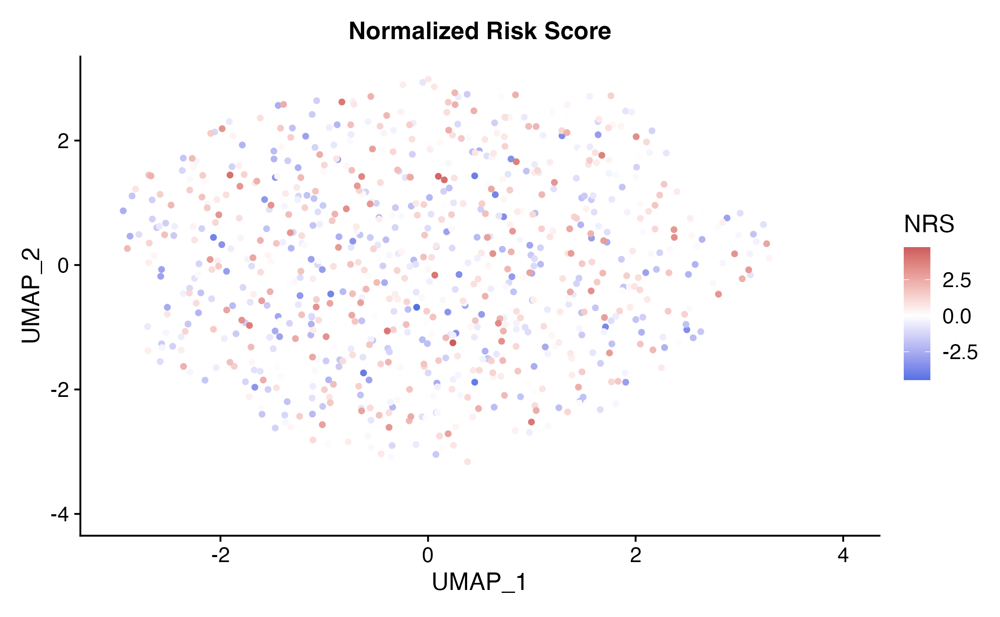
Cell Classification
# Classification colors
class_colors <- c("scPAS-" = "royalblue", "0" = "gray80", "scPAS+" = "indianred")
DimPlot(
sc_obj,
group.by = "scPAS",
cols = class_colors,
pt.size = 1,
order = c("0", "scPAS-", "scPAS+") # Draw significant cells on top
) +
ggtitle("scPAS Classification") +
theme(
plot.title = element_text(hjust = 0.5, face = "bold", size = 14)
)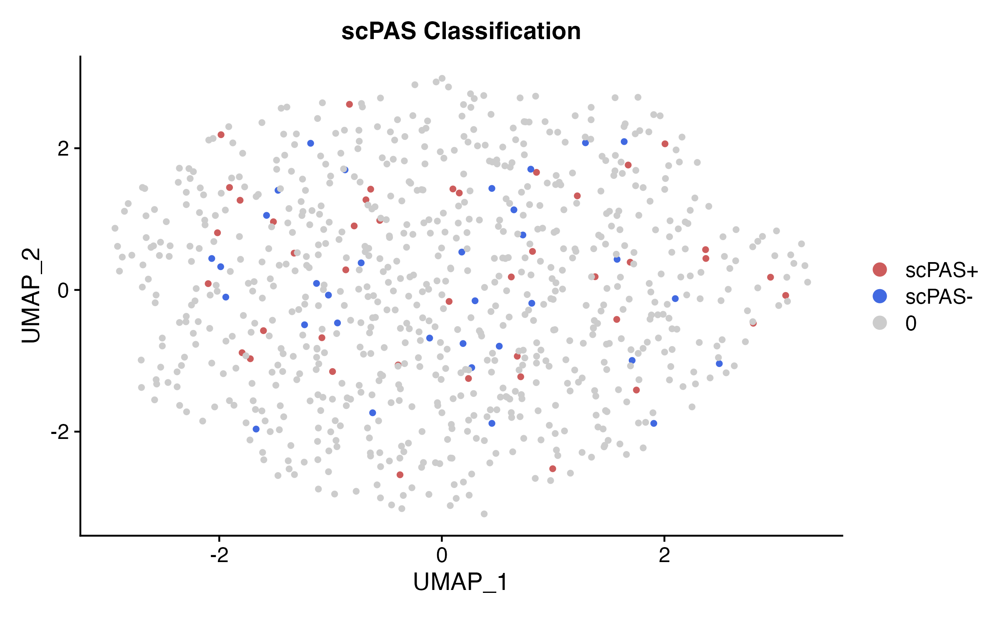
Combined Multi-Panel Plot
library(patchwork)
p1 <- DimPlot(sc_obj, group.by = "celltype", cols = celltype_colors, label = TRUE) +
ggtitle("Cell Types") + NoLegend()
p2 <- FeaturePlot(sc_obj, features = "scPAS_NRS", pt.size = 0.8) +
scale_color_gradient2(low = "royalblue", mid = "white", high = "indianred", midpoint = 0) +
ggtitle("Risk Score")
p3 <- DimPlot(sc_obj, group.by = "scPAS", cols = class_colors,
order = c("0", "scPAS-", "scPAS+")) +
ggtitle("Classification")
p1 | p2 | p3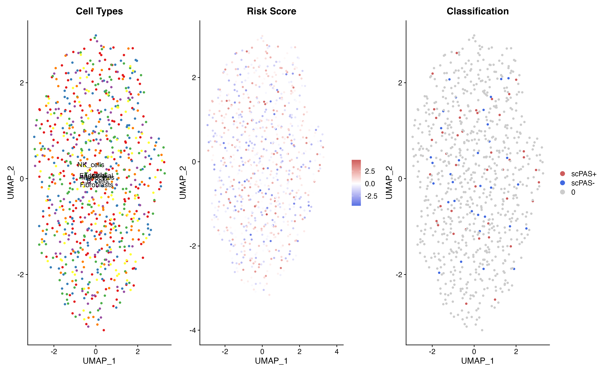
Cell Type Enrichment Analysis
Proportion Bar Plot
# Calculate proportions
prop_data <- as.data.frame(table(sc_obj$celltype, sc_obj$scPAS))
colnames(prop_data) <- c("CellType", "scPAS", "Count")
# Calculate proportions within each cell type
prop_data <- prop_data %>%
dplyr::group_by(CellType) %>%
dplyr::mutate(
Total = sum(Count),
Proportion = Count / Total
) %>%
dplyr::ungroup()
ggplot(prop_data, aes(x = CellType, y = Proportion, fill = scPAS)) +
geom_bar(stat = "identity", position = "stack", width = 0.7) +
scale_fill_manual(values = class_colors) +
labs(
x = "Cell Type",
y = "Proportion",
title = "scPAS Classification by Cell Type",
fill = "Classification"
) +
theme(
axis.text.x = element_text(angle = 45, hjust = 1),
plot.title = element_text(hjust = 0.5, face = "bold"),
legend.position = "right"
) +
coord_flip()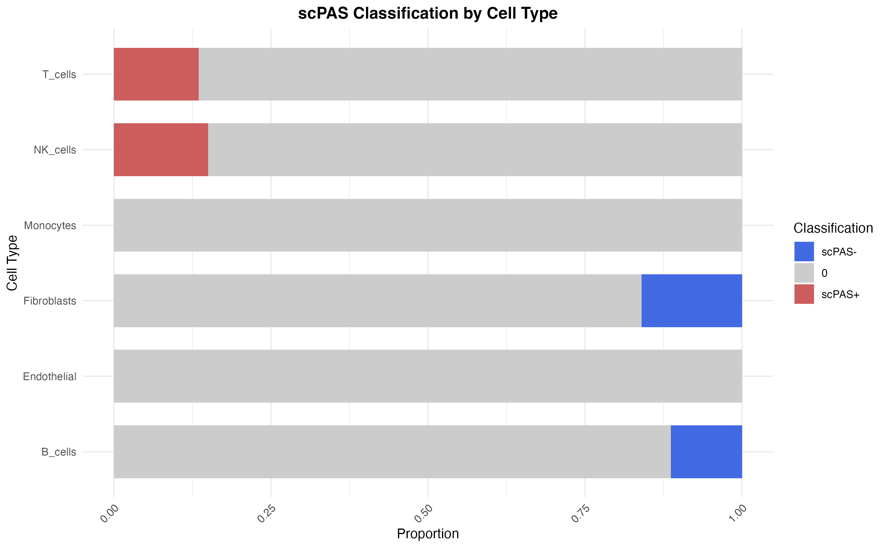
Enrichment Heatmap
# Calculate enrichment (observed / expected)
enrichment_matrix <- reshape2::dcast(prop_data, CellType ~ scPAS, value.var = "Count")
rownames(enrichment_matrix) <- enrichment_matrix$CellType
enrichment_matrix <- as.matrix(enrichment_matrix[, -1])
# Calculate expected counts
total_per_class <- colSums(enrichment_matrix)
total_per_type <- rowSums(enrichment_matrix)
grand_total <- sum(enrichment_matrix)
expected <- outer(total_per_type, total_per_class) / grand_total
enrichment <- log2((enrichment_matrix + 1) / (expected + 1))
# Plot heatmap
enrichment_df <- reshape2::melt(enrichment)
colnames(enrichment_df) <- c("CellType", "scPAS", "Enrichment")
ggplot(enrichment_df, aes(x = scPAS, y = CellType, fill = Enrichment)) +
geom_tile(color = "white", size = 0.5) +
geom_text(aes(label = round(Enrichment, 2)), color = "black", size = 4) +
scale_fill_gradient2(
low = "royalblue",
mid = "white",
high = "indianred",
midpoint = 0,
name = "log2(O/E)"
) +
labs(
x = "scPAS Classification",
y = "Cell Type",
title = "Cell Type Enrichment in scPAS Classes"
) +
theme(
plot.title = element_text(hjust = 0.5, face = "bold"),
axis.text.x = element_text(angle = 0)
)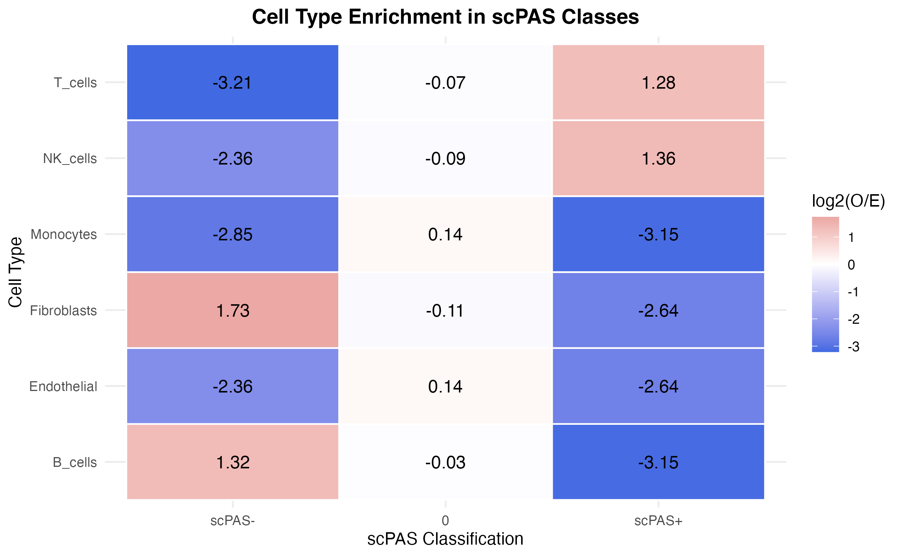
Volcano-Style Plot
# Create volcano-style data
volcano_data <- data.frame(
NRS = sc_obj$scPAS_NRS,
neg_log_FDR = -log10(sc_obj$scPAS_FDR + 1e-10),
Classification = sc_obj$scPAS
)
ggplot(volcano_data, aes(x = NRS, y = neg_log_FDR, color = Classification)) +
geom_point(alpha = 0.6, size = 1.5) +
scale_color_manual(values = class_colors) +
geom_hline(yintercept = -log10(0.05), linetype = "dashed", color = "gray40") +
geom_vline(xintercept = 0, linetype = "dashed", color = "gray40") +
annotate("text", x = max(volcano_data$NRS) * 0.7, y = -log10(0.05) + 0.5,
label = "FDR = 0.05", color = "gray40", size = 3.5) +
labs(
x = "Normalized Risk Score",
y = "-log10(FDR)",
title = "Cell-Level Volcano Plot"
) +
theme(
plot.title = element_text(hjust = 0.5, face = "bold"),
legend.position = "bottom"
)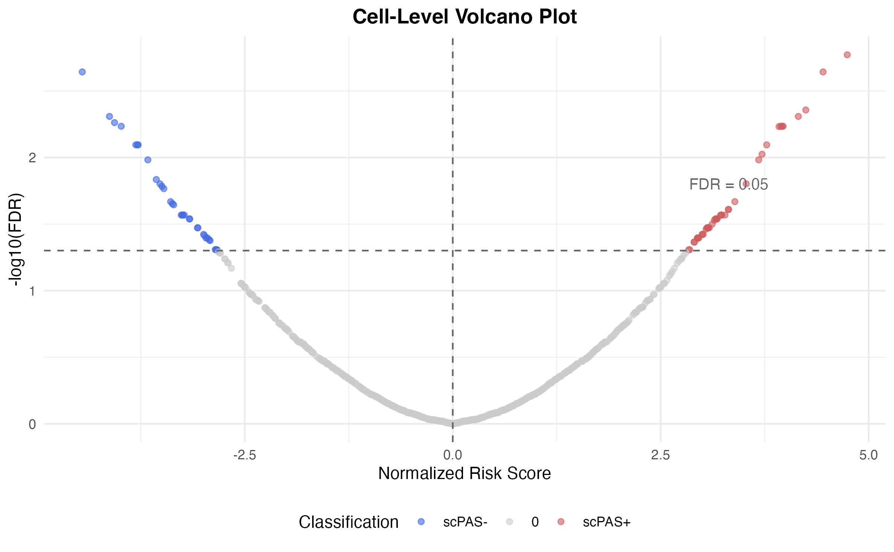
Violin Plots
Risk Score by Cell Type
VlnPlot(
sc_obj,
features = "scPAS_NRS",
group.by = "celltype",
cols = celltype_colors,
pt.size = 0
) +
geom_hline(yintercept = 0, linetype = "dashed", color = "gray40") +
stat_summary(fun = median, geom = "point", size = 3, color = "black") +
labs(
x = "Cell Type",
y = "Normalized Risk Score",
title = "Risk Score Distribution by Cell Type"
) +
theme(
axis.text.x = element_text(angle = 45, hjust = 1),
plot.title = element_text(hjust = 0.5, face = "bold"),
legend.position = "none"
)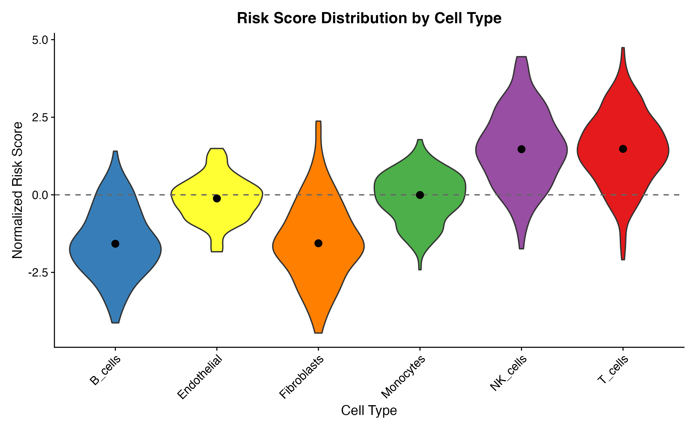
Split Violin by Classification
# Custom split violin
ggplot(sc_obj@meta.data, aes(x = celltype, y = scPAS_NRS, fill = scPAS)) +
geom_violin(scale = "width", trim = TRUE, alpha = 0.7) +
scale_fill_manual(values = class_colors) +
geom_hline(yintercept = 0, linetype = "dashed", color = "gray40") +
labs(
x = "Cell Type",
y = "Normalized Risk Score",
title = "Risk Score by Cell Type and Classification",
fill = "scPAS"
) +
theme(
axis.text.x = element_text(angle = 45, hjust = 1),
plot.title = element_text(hjust = 0.5, face = "bold")
)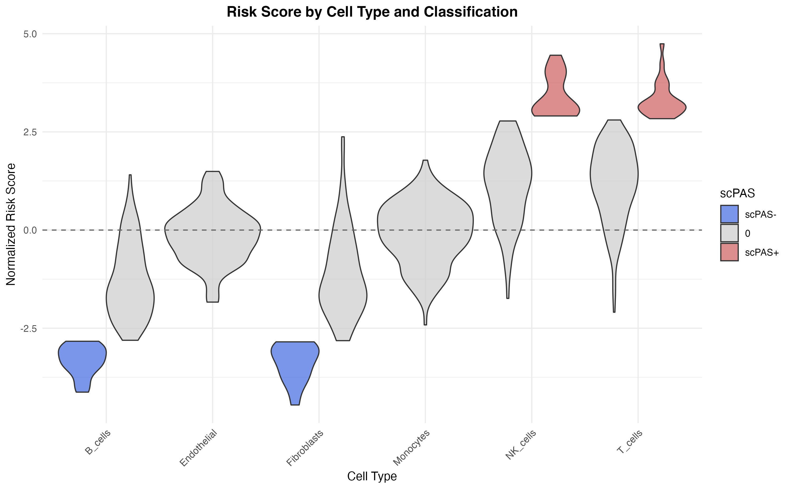
Box Plots with Statistical Tests
# Calculate summary statistics
library(dplyr)
summary_stats <- sc_obj@meta.data %>%
group_by(celltype) %>%
summarise(
median_NRS = median(scPAS_NRS),
mean_NRS = mean(scPAS_NRS),
n = n(),
.groups = "drop"
) %>%
arrange(desc(median_NRS))
# Reorder cell types
sc_obj@meta.data$celltype_ordered <- factor(
sc_obj$celltype,
levels = summary_stats$celltype
)
ggplot(sc_obj@meta.data, aes(x = celltype_ordered, y = scPAS_NRS, fill = celltype_ordered)) +
geom_boxplot(outlier.size = 0.5, alpha = 0.8) +
scale_fill_manual(values = celltype_colors[summary_stats$celltype]) +
geom_hline(yintercept = 0, linetype = "dashed", color = "gray40") +
labs(
x = "Cell Type (ordered by median NRS)",
y = "Normalized Risk Score",
title = "Risk Score Distribution (Ordered)"
) +
theme(
axis.text.x = element_text(angle = 45, hjust = 1),
plot.title = element_text(hjust = 0.5, face = "bold"),
legend.position = "none"
) +
annotate("text", x = 0.5, y = max(sc_obj$scPAS_NRS) * 0.9,
label = paste("n =", nrow(sc_obj@meta.data)), hjust = 0, size = 3.5)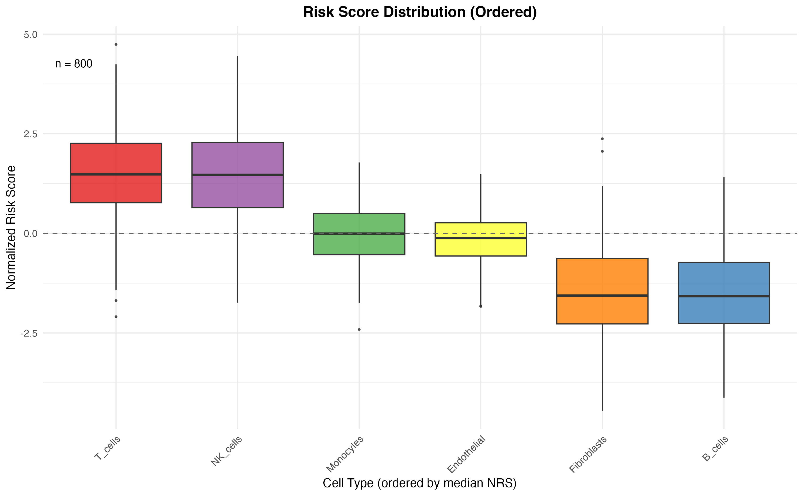
Density Plots
ggplot(sc_obj@meta.data, aes(x = scPAS_NRS, fill = celltype)) +
geom_density(alpha = 0.5) +
scale_fill_manual(values = celltype_colors) +
geom_vline(xintercept = 0, linetype = "dashed", color = "gray40") +
labs(
x = "Normalized Risk Score",
y = "Density",
title = "Risk Score Density by Cell Type",
fill = "Cell Type"
) +
theme(
plot.title = element_text(hjust = 0.5, face = "bold"),
legend.position = "right"
)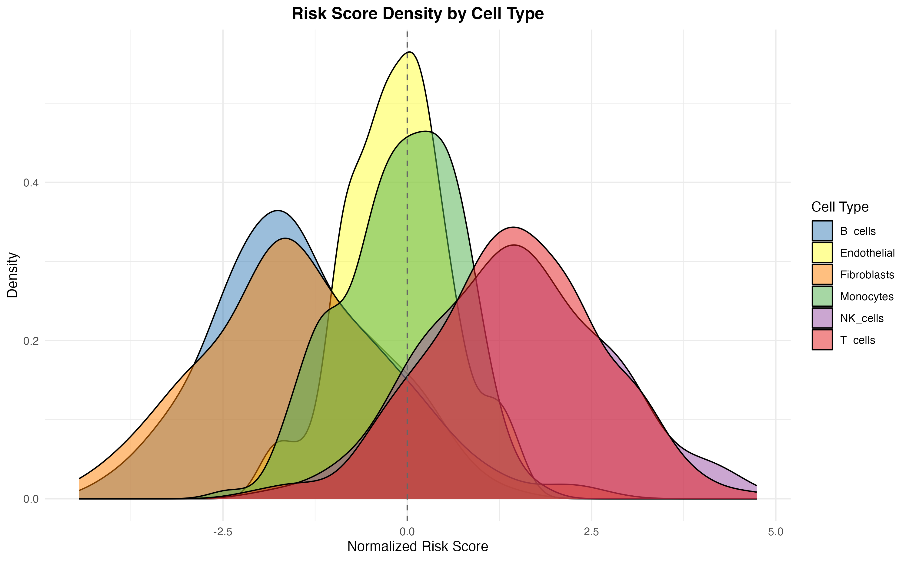
Pie Chart Summary
# Summary counts
pie_data <- as.data.frame(table(sc_obj$scPAS))
colnames(pie_data) <- c("Classification", "Count")
pie_data$Percentage <- pie_data$Count / sum(pie_data$Count) * 100
pie_data$Label <- paste0(pie_data$Classification, "\n", round(pie_data$Percentage, 1), "%")
ggplot(pie_data, aes(x = "", y = Count, fill = Classification)) +
geom_bar(stat = "identity", width = 1, color = "white") +
coord_polar(theta = "y") +
scale_fill_manual(values = class_colors) +
geom_text(aes(label = Label), position = position_stack(vjust = 0.5), size = 4) +
labs(title = "scPAS Classification Summary") +
theme_void() +
theme(
plot.title = element_text(hjust = 0.5, face = "bold", size = 14),
legend.position = "none"
)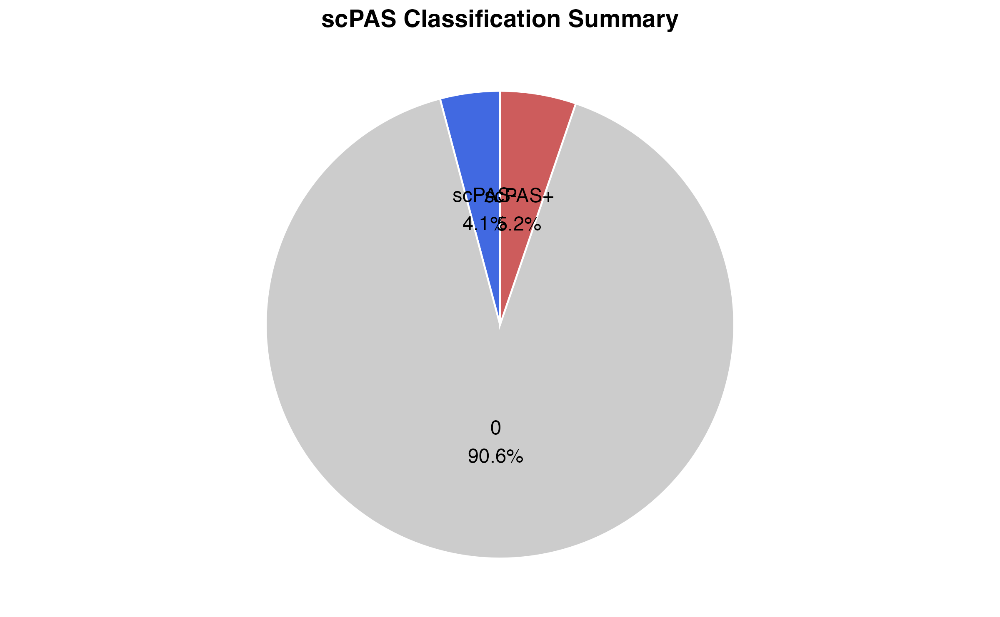
Publication-Ready Figure
# Create a publication-ready multi-panel figure
p1 <- DimPlot(sc_obj, group.by = "celltype", cols = celltype_colors, label = TRUE, pt.size = 0.5) +
ggtitle("A. Cell Types") + theme(legend.position = "none")
p2 <- FeaturePlot(sc_obj, features = "scPAS_NRS", pt.size = 0.5) +
scale_color_gradient2(low = "royalblue", mid = "white", high = "indianred", midpoint = 0, name = "NRS") +
ggtitle("B. Risk Score")
p3 <- DimPlot(sc_obj, group.by = "scPAS", cols = class_colors, pt.size = 0.5,
order = c("0", "scPAS-", "scPAS+")) +
ggtitle("C. Classification")
p4 <- VlnPlot(sc_obj, features = "scPAS_NRS", group.by = "celltype",
cols = celltype_colors, pt.size = 0) +
geom_hline(yintercept = 0, linetype = "dashed") +
ggtitle("D. Risk by Cell Type") + NoLegend() +
theme(axis.text.x = element_text(angle = 45, hjust = 1))
p5 <- ggplot(prop_data, aes(x = CellType, y = Proportion, fill = scPAS)) +
geom_bar(stat = "identity", position = "stack", width = 0.7) +
scale_fill_manual(values = class_colors) +
coord_flip() +
labs(x = "", y = "Proportion", fill = "") +
ggtitle("E. Proportion by Cell Type")
p6 <- ggplot(pie_data, aes(x = "", y = Count, fill = Classification)) +
geom_bar(stat = "identity", width = 1, color = "white") +
coord_polar(theta = "y") +
scale_fill_manual(values = class_colors) +
geom_text(aes(label = Label), position = position_stack(vjust = 0.5), size = 3) +
theme_void() +
ggtitle("F. Overall Summary") +
theme(legend.position = "none")
# Combine
(p1 | p2 | p3) / (p4 | p5 | p6) +
plot_annotation(
title = "scPAS Analysis Results",
theme = theme(plot.title = element_text(hjust = 0.5, face = "bold", size = 16))
)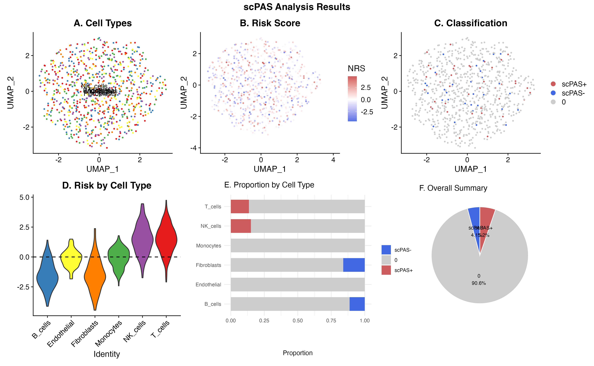
Saving Plots
# Save individual plots
ggsave("umap_celltype.pdf", plot = p1, width = 8, height = 6, dpi = 300)
ggsave("umap_risk_score.pdf", plot = p2, width = 8, height = 6, dpi = 300)
ggsave("umap_classification.pdf", plot = p3, width = 8, height = 6, dpi = 300)
# Save combined figure
combined_fig <- (p1 | p2 | p3) / (p4 | p5 | p6)
ggsave("scPAS_combined_figure.pdf", plot = combined_fig, width = 14, height = 10, dpi = 300)
ggsave("scPAS_combined_figure.png", plot = combined_fig, width = 14, height = 10, dpi = 300)Session Information
sessionInfo()
#> R version 4.4.0 (2024-04-24)
#> Platform: aarch64-apple-darwin20
#> Running under: macOS 15.6.1
#>
#> Matrix products: default
#> BLAS: /Library/Frameworks/R.framework/Versions/4.4-arm64/Resources/lib/libRblas.0.dylib
#> LAPACK: /Library/Frameworks/R.framework/Versions/4.4-arm64/Resources/lib/libRlapack.dylib; LAPACK version 3.12.0
#>
#> locale:
#> [1] C
#>
#> time zone: Asia/Shanghai
#> tzcode source: internal
#>
#> attached base packages:
#> [1] stats graphics grDevices utils datasets methods base
#>
#> other attached packages:
#> [1] patchwork_1.3.2 dplyr_1.1.4 RColorBrewer_1.1-3 ggplot2_4.0.1
#> [5] Matrix_1.7-4 SeuratObject_4.1.4 Seurat_4.4.0 scPAS_1.0.3
#>
#> loaded via a namespace (and not attached):
#> [1] deldir_2.0-4 pbapply_1.7-4 gridExtra_2.3
#> [4] rlang_1.1.7 magrittr_2.0.4 RcppAnnoy_0.0.23
#> [7] otel_0.2.0 spatstat.geom_3.6-1 matrixStats_1.5.0
#> [10] ggridges_0.5.7 compiler_4.4.0 png_0.1-8
#> [13] systemfonts_1.3.1 vctrs_0.7.0 reshape2_1.4.5
#> [16] stringr_1.6.0 pkgconfig_2.0.3 fastmap_1.2.0
#> [19] labeling_0.4.3 promises_1.5.0 rmarkdown_2.30
#> [22] ggbeeswarm_0.7.3 preprocessCore_1.68.0 ragg_1.5.0
#> [25] purrr_1.2.1 xfun_0.56 cachem_1.1.0
#> [28] jsonlite_2.0.0 goftest_1.2-3 later_1.4.5
#> [31] spatstat.utils_3.2-1 irlba_2.3.5.1 parallel_4.4.0
#> [34] cluster_2.1.8.1 R6_2.6.1 ica_1.0-3
#> [37] spatstat.data_3.1-9 bslib_0.9.0 stringi_1.8.7
#> [40] reticulate_1.44.1 spatstat.univar_3.1-6 parallelly_1.46.1
#> [43] lmtest_0.9-40 jquerylib_0.1.4 scattermore_1.2
#> [46] Rcpp_1.1.1 knitr_1.51 tensor_1.5.1
#> [49] future.apply_1.20.1 zoo_1.8-15 sctransform_0.4.3
#> [52] httpuv_1.6.16 splines_4.4.0 igraph_2.2.1
#> [55] tidyselect_1.2.1 abind_1.4-8 dichromat_2.0-0.1
#> [58] yaml_2.3.12 spatstat.random_3.4-3 spatstat.explore_3.6-0
#> [61] codetools_0.2-20 miniUI_0.1.2 listenv_0.10.0
#> [64] plyr_1.8.9 lattice_0.22-7 tibble_3.3.1
#> [67] withr_3.0.2 shiny_1.12.1 S7_0.2.1
#> [70] ROCR_1.0-11 ggrastr_1.0.2 evaluate_1.0.5
#> [73] Rtsne_0.17 future_1.69.0 desc_1.4.3
#> [76] survival_3.8-3 polyclip_1.10-7 fitdistrplus_1.2-4
#> [79] pillar_1.11.1 KernSmooth_2.23-26 plotly_4.11.0
#> [82] generics_0.1.4 sp_2.2-0 scales_1.4.0
#> [85] globals_0.18.0 xtable_1.8-4 glue_1.8.0
#> [88] lazyeval_0.2.2 tools_4.4.0 data.table_1.18.0
#> [91] RSpectra_0.16-2 RANN_2.6.2 fs_1.6.6
#> [94] leiden_0.4.3.1 cowplot_1.2.0 grid_4.4.0
#> [97] tidyr_1.3.2 nlme_3.1-168 beeswarm_0.4.0
#> [100] vipor_0.4.7 cli_3.6.5 spatstat.sparse_3.1-0
#> [103] textshaping_1.0.4 viridisLite_0.4.2 uwot_0.2.4
#> [106] gtable_0.3.6 sass_0.4.10 digest_0.6.39
#> [109] progressr_0.18.0 ggrepel_0.9.6 htmlwidgets_1.6.4
#> [112] farver_2.1.2 htmltools_0.5.9 pkgdown_2.1.3
#> [115] lifecycle_1.0.5 httr_1.4.7 mime_0.13
#> [118] MASS_7.3-65